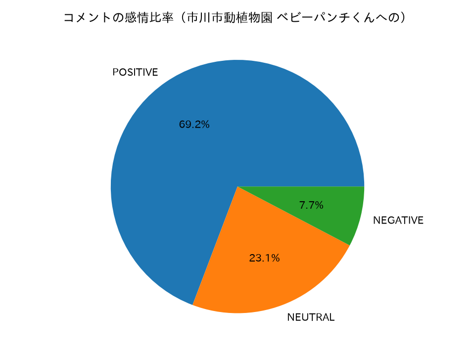
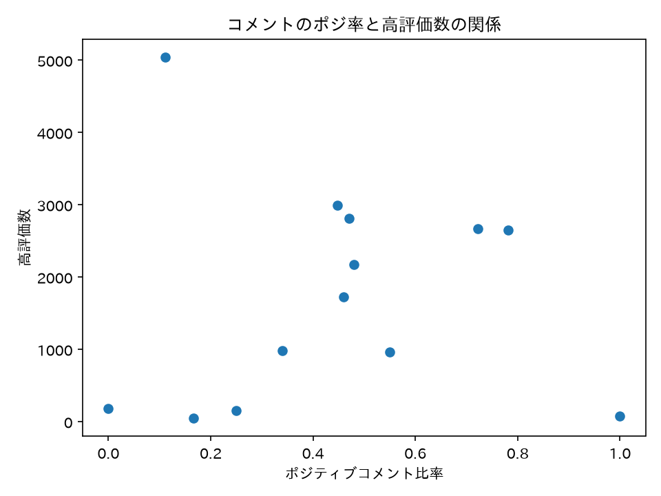

コメントのネガポジ分析
市川市データセットの作成で作ったデータセット (ichikawa_youtube.csv) を使い, 各コメントを 事前学習済みの感情分析モデルでポジティブ/ネガティブに分類し, その結果と動画の属性 (再生数・高評価数) の関係を簡単に分析してみます. ここからは API キーは不要で, 配布 CSV だけで進められます.
背景となる研究: 千葉商科大学の丹波ら (2025)「SNS 投稿日時及びイベントの時間的変遷による感情変動のテキスト解析」 (SICE) は, X (Twitter) 投稿を日本語 BERT による感情スコアに変換し, STL 分解やワードクラウド・LDA で時間的変遷を分析しています. 本稿はその簡易版として, 対象を YouTube のコメントに替え, 時系列分解は省いて「動画ごとの感情の傾向」と「動画属性との関係」に絞ります.
事前学習済みモデルによるネガポジ判定
感情分析には, Amazon レビューでファインチューニングされた日本語 BERT モデル christian-phu/bert-finetuned-japanese-sentiment を使います. このモデルは各テキストを POSITIVE / NEGATIVE / NEUTRAL の 3 クラスに分類し, その確信度スコア (0〜1) を返します.
uv add transformers fugashi unidic-lite torch tqdm matplotlib-fontjaimport torch
from transformers import pipeline, AutoModelForSequenceClassification, BertJapaneseTokenizer
from tqdm import tqdm
MODEL_NAME = 'christian-phu/bert-finetuned-japanese-sentiment'
def load_classifier():
"""感情分析の pipeline を作成する. GPU があれば利用する."""
if torch.backends.mps.is_available():
device = torch.device('mps') # Mac の GPU
elif torch.cuda.is_available():
device = torch.device('cuda:0') # NVIDIA GPU
else:
device = torch.device('cpu')
model = AutoModelForSequenceClassification.from_pretrained(MODEL_NAME)
tokenizer = BertJapaneseTokenizer.from_pretrained(MODEL_NAME)
return pipeline('sentiment-analysis', model=model, tokenizer=tokenizer, device=device)
def classify_comments(df: pd.DataFrame, classifier) -> pd.DataFrame:
"""comment 列を分類し, Label と Score を付与した DataFrame を返す."""
df = df[df['comment'].apply(lambda x: isinstance(x, str))].copy()
labels, scores = [], []
for text in tqdm(df['comment']):
try:
result = classifier(text, truncation=True)[0] # 長文はモデル最大長で切り詰め
labels.append(result['label'].upper()) # POSITIVE / NEGATIVE / NEUTRAL に正規化
scores.append(round(result['score'], 4))
except Exception:
labels.append('ERROR')
scores.append(0.0)
df['Label'] = labels
df['Score'] = scores
return df初回はモデル (数百 MB) のダウンロードに時間がかかります. テストデータでの Accuracy は約 0.81 です. 皮肉や文脈に依存する表現は誤判定しやすい点に注意してください.
データの読み込みと分類
配布されている市川市データセット (ichikawa_youtube.csv) を読み込み, comment 列を分類して Label・Score を付与します.
import pandas as pd
import matplotlib.pyplot as plt
import matplotlib_fontja # 日本語ラベルの文字化けを防ぐ
df = pd.read_csv('ichikawa_youtube.csv')
classifier = load_classifier()
df = classify_comments(df, classifier)
print(df[['title', 'comment', 'Label', 'Score']].head())1 本の動画の感情比率を見る
まず 1 本の動画について, コメントのポジ/ネガ/ニュートラルの比率を可視化してみます.
import re
# 任意の 1 動画を取り出す (ここでは最初の動画)
one = df[df['video_id'] == df['video_id'].iloc[0]]
counts = one['Label'].value_counts()
counts.plot.pie(autopct='%1.1f%%', ylabel='')
title = re.sub(r'[^\w\s]', '', one['title'].iloc[0])[:18] # 絵文字・記号を除いて短縮
plt.title(f'コメントの感情比率（{title}）')
plt.show()
複数動画を横断して属性との関係を見る
次に, 動画ごとのポジティブコメント比率を計算して, 再生数や高評価数との関係を調べます. ポジ率は 1 本だけだと 1 つの値にしかなりませんが, 複数動画を並べると属性との相関を見られます. CSV は 1 行 = 1 コメントで動画統計が各行に入っているので, groupby('video_id') で動画ごとに集約します.
LABEL_TO_SCORE = {'POSITIVE': 1, 'NEUTRAL': 0, 'NEGATIVE': -1}
df['signed'] = df['Label'].map(LABEL_TO_SCORE).fillna(0) * df['Score']
# 動画ごとに集約 (動画統計は動画内で一定なので first を取る)
agg = df.groupby('video_id').agg(
title = ('title', 'first'),
n_comments = ('comment', 'size'),
positive_ratio = ('Label', lambda s: (s == 'POSITIVE').mean()),
mean_score = ('signed', 'mean'),
view_count = ('view_count', 'first'),
like_count = ('like_count', 'first'),
comment_count = ('comment_count', 'first'),
).reset_index()
# 相関
cols = ['positive_ratio', 'mean_score', 'view_count', 'like_count', 'comment_count']
print(agg[cols].corr())
# 散布図: ポジ率 vs 高評価数
plt.scatter(agg['positive_ratio'], agg['like_count'])
plt.xlabel('ポジティブコメント比率')
plt.ylabel('高評価数')
plt.title('コメントのポジ率と高評価数の関係')
plt.show()
このように,「コメントがポジティブな動画ほど高評価が多いか」「再生数とコメントの感情に関係はあるか」といった問いを動画横断で定量的に調べられます. ただし丹波ら (2025) が指摘するように, 感情は時間帯やイベントによっても変動します. より踏み込んだ分析として, 取得したコメントを ワードクラウドや LDA で語彙レベルに分解したり, 回帰式と回帰係数を参考にポジ率を説明変数とした回帰モデルを組んだりできます.
この感情分析のコード一式は 配布ページ の sentiment_analysis.py にあります. 入力の ichikawa_youtube.csv も GitHub で配布 しているので, API キーが無くても分析を再現できます.